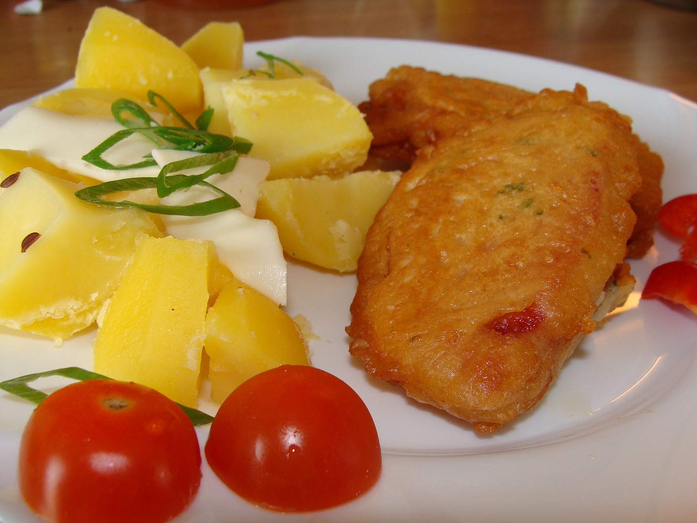

Lahodný salám obalený v jemném sýrovém těstíčku, osmažený dozlatova. Skvělý jako hlavní chod s bramborem nebo zeleninou.
Nejdříve připravíme těstíčko: do mísy dáme mléko, vejce, osolíme, opepříme a našleháme. Přidáme asi 4 lžíce hladké mouky a promícháme.
Tvrdý sýr nastrouháme na jemném struhadle a přidáme do těstíčka.
Salám nakrájíme na silnější kolečka. Pokud je těstíčko řídké, přidáme mouku podle potřeby, aby bylo dostatečně husté pro obalování.
Rozpálíme olej na pánvi a kolečka salámu v těstíčku smažíme z obou stran dozlatova.
Hotový salám podáváme s bramborem nebo bramborovou kaší a oblíbenou zeleninou.